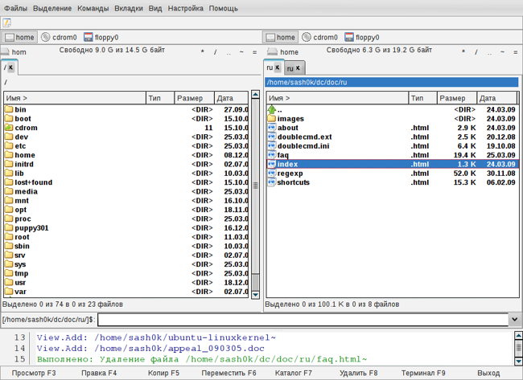

Что такое Double Commander?
Double Commander - это кроссплатформенный файловый менеджер с двумя панелями.
Целью данного проекта является создание файл-менеджера, аналогичного по функциональности Total Commander и совместимого с его плагинами. Double Commander абсолютно бесплатен и распространяется с открытым исходным кодом (по лицензии GNU GPL версии 2).
Вот некоторые характеристики Double Commander:
- Все операции выполняются в фоновом режиме
- Поддержка вкладок файловых панелей
- Настраиваемая панель инструментов с кнопками для запуска внешних программ или внутренних команд меню.
- Возможности для группового переименования
- Настраиваемые колонки
- Встроенный просмотрщик файлов (F3) для просмотра файлов ЛЮБОГО РАЗМЕРА в шестнадцатеричном, двоичном или текстовом формате
- Встроенный текстовый редактор (F4) с подсветкой синтаксиса
- Работа с архивами так же, как с подкаталогами. Вы можете легко копировать файлы в архив и из него. Поддерживаются следующие типы архивов ZIP, TAR GZ, TGZ, а также BZ2, RPM, CPIO, DEB, RAR.
- Расширенный поиск файлов, включая поиск текста в любых файлах.
- Поддержка WCX, WDX и WFX плагинов от Total Commander
- Протоколирование файловых операций
- И т.п...
Внешний вид Double Commander:

Внимание: так как проект в настоящее время активно развивается, эта информация может быть неполной или неактуальной.